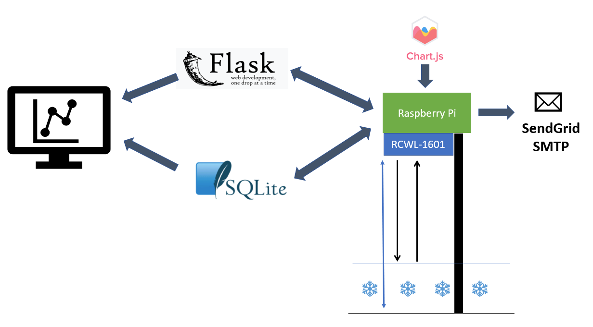
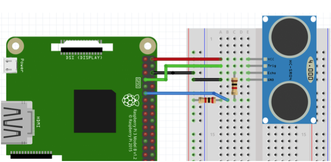
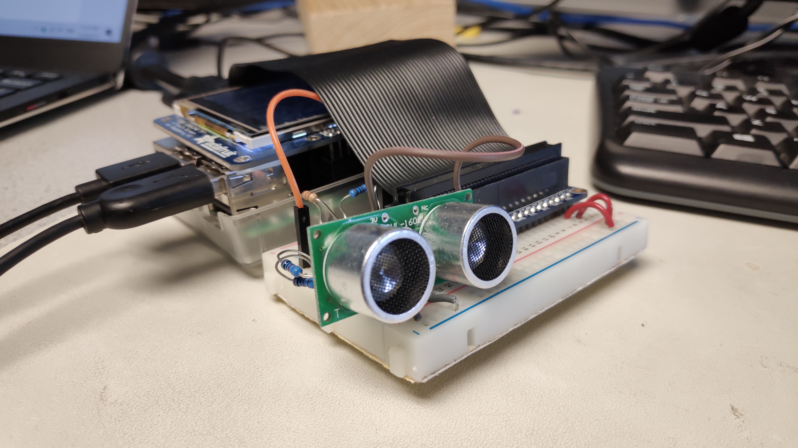
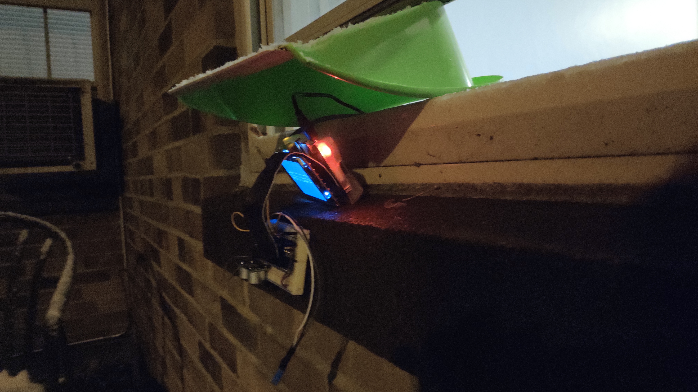
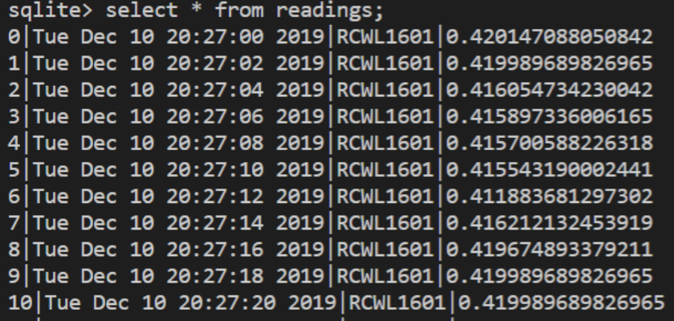
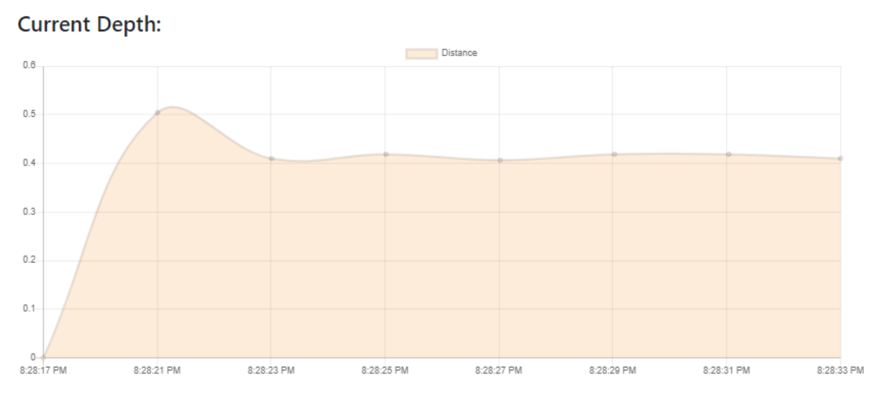
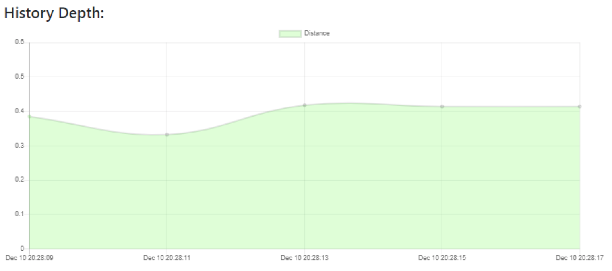

Snow Pi
Zixiao Wang(zw579) and Yue Zhang(yz2455)
Project Demo
Objective
The winter of Ithaca is coming with lots of snow. We’ve heard of its reputation and we want to know how bad it can really be. Therefore, we want to introduce a system, SnowPi, that allows us to know real-time snow accumulation depth and be able to alert people when the depth is getting dangerous. The system displays real-time snow depth chart dynamically and store history depth data in its local database for user to retrieve. For better user interaction, the system has a front-end web page for data visualization. Once the detected snow depth is above the set threshold, an alerting email will be sent to registered user.
Introduction
Building SnowPi system includes both front-end and back-end design. The system comprises the following features:
- Raspberry Pi as Flask Server
- Automatic distance data collection
- Local database inserting and retrieving
- Dynamic data visualization on web page
The system also consists of several peripherals to:
Design
The picture below indicates how system is structured and how data flows in the system.
Hardware Design
Ultrasonic Sensor Circuit


We use RCWL-1601 ultrasonic sensor as distance detector. It has four wires connected to Raspberry Pi, which are VCC, Ground, Trig and Echo. Raspberry Pi triggers the sensor to start sending ultrasonic burst by sending a pulse of 1 nanosecond to the Trig pin. Then Raspberry Pi starts to collect data sent back from Echo pin. Note a 500 Ohm resistor is needed to protect the GPIO pin because the voltage of Echo pin is around 5V.
Stand with defualt height

This picture shows our testing outdoor. Raspberry Pi was located on the top the stand and ultrasonic sensor is facing down to the ground.
Software Design
Flask Server
Flask is a lightweight WSGI web application framework running on Python. We use Flask to set up backend server on Raspberry Pi. The Flask server is responsible for passing the data collected from the sensor to front-end web page. It also helps coordinate the inserting and retrieving history data.
Sqlite3 Database
Database is introduced in our project for storing and retrieving history data. Everytime distance data is updated, it will be inserted in database with its unique data ID, local time and data value. When user sends the command to retrieve latest N points of history data, our database will return N most recently inserted points in chronical order.
Chart.js Library
We use chart.js library to visualize our current data and history data dynamically. Everytime the sensor collects new data, a server sent event will trigger the front-end page to refresh automatically and push new data to the chart.
SendGrid SMTP
Our system keeps an eye on the dangerous snow depth. Once the detected depth is greater than 30cm, system will send an alerting email to a specified email address. Email is sent by SendGrid SMTP(Simple Mail Tranfer Protocol). A argument representing dangerous depth is sent thourgh FIFO to another python script to send the email.
Testing
Our test focused on the detection of ultrasonic sensor, real-time snow depth visualization, history data visualization and alert email receiving.
Detection of ultrasonic sensor
Following is our wooden base, which is constructed for stablization, snow would be accumulating on the base, the ultrasonic sensor on top will detect the distance to snow surface. We record the original height and get the real-time distance when snow adding up.
Real-time Snow Depth Visualization
We use our raspberry pi as a server, and our laptop connected to the same wifi as raspberry pi. When we connect the raspberry pi server, we could load the web page. Originally, our snow depth is zero, as we adding snow on the base the depth continuously increasing. The real-time depth will be visualized in the chart, the y axis of our chart is the snow depth. We update the dynamic chart every 2 seconds.
History Data Visualization
As we type in the number of history points, the respberry pi will retrieve data from our database, and visualize the history points in the history chart. In the following example, we want the past 5 depth information.

Sending Alert Email
We set a resonable threshold as 0.3, which means that when snow depth is above 0.3m, our raspberry pi will send an alert email to user.
Results
Overall, our project result fairly reached our expectation.
Hardware
For the hardware, we successfully get distance from ultrasonic sensor and send real-time data to raspberry pi.
Front-end && Back-end
For the whole project, we used python and flask library to connect front-end and back-end. The real-time snow depth will be caught by html and visualized on the webpage. We will update the dynamic chart every 10 seconds. Users can type in the number of history points they want to know, after they sent request, the rapberry pi will retrieve history data from our database and display these points on our history chart in the webpage.
Conclusion
Thanks to this final project, we learnt a lot from it. In a nutshell, we built a Snow Depth Visualizer on webpage which could tell you the real-time snow depth outside. Firstly, for our framework we had an ultrasonic sensor on top of the base wood, which detect the distance to snow surface. The ultrasonic sensor will send the real-time distance to our raspberry pi, and the raspberry pi calculates the snow depth by subtracting the received distance from the base height. Secondly, we use the raspberry pi as a server, when we are connecting to the same local internet as raspberry pi, we could connect to the server and come into the web page. To design the dynamic front-end webpage and database, we used python and flask library. To send alert email when snow depth is above the threshold, we implemented it with sendgrid. To visualize and retrieve the history data, we conducted tables with sqlite, which is a small, fast, full-featured SQL database engine.
Future Work
- We can use multiple sensors to detect the distances in a region instead of just one, because the surface of snow is not flatten, we can calculate the average depth with multiple sensors.
- Add DHT11 temperature sensor to our project, because the sound speed will be influenced by temperature and will not always be 340 metres per second. The distance got by our ultrasonic sensor depends on real-time temperature, so we could add temperature sonsor to validate.
Budget
| Vendor | Description | Quantity | Unit Cost($) | Total Cost($) |
|---|---|---|---|---|
| ECE Department | Raspberry Pi 3B | 1 | 35.00 | 35.00 |
| ECE Department | RCWL-1601 Ultrasonic sensor | 1 | 6.00 | 6.00 |
| Total | 41 | |||
References
- Python WebServer With Flask and Raspberry Pi
- From Data to Graph: a Web Jorney With Flask and SQLite
- Youtube Video
Work Distribution
For our snow pi project, we implemented it together. For the weekly report and the final report, we split parts and worked on different sections. Zixiao worked on the Objective, Introduction, Design parts, and Yue worked on the Test, Conclusion and Results part.